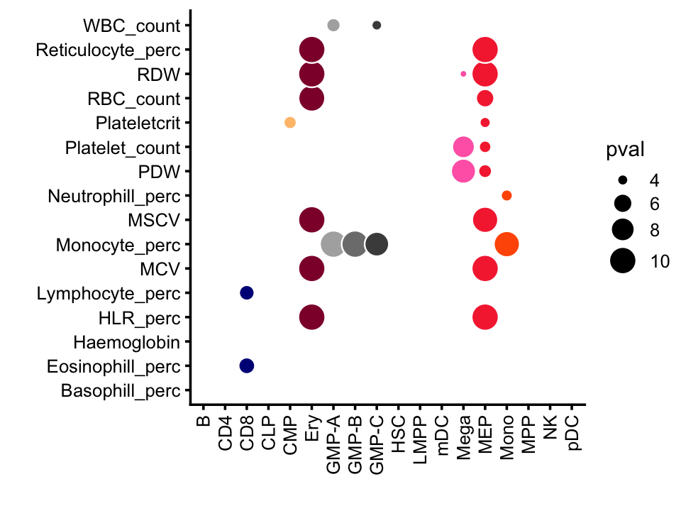
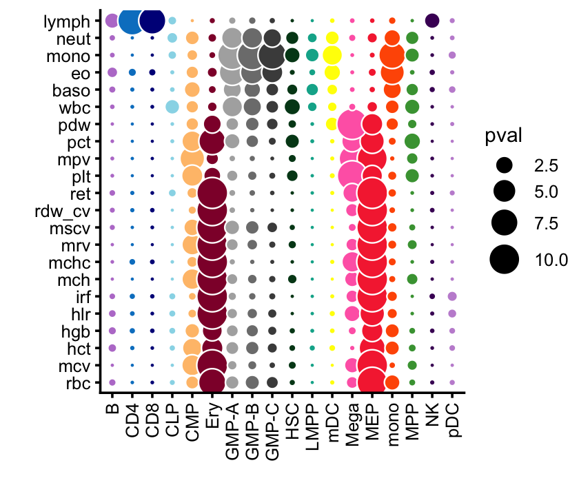

gchromVAR analysis of SuSiE and mvSuSiE fine-mapping results for UK Biobank blood cell traits
Peter Carbonetto
October 23, 2023
TO DO: Add summary of the gchromvar analysis here.
Load the packages used in the analysis.
library(chromVAR)
library(gchromVAR)
library(BuenColors)
library(SummarizedExperiment)
library(data.table)
library(BiocParallel)
library(BSgenome.Hsapiens.UCSC.hg19)
library(ggplot2)
library(cowplot)
library(reshape2)For reproducibility, set the seed.
set.seed(1)Load the susie_rss blood cell trait fine-mapping results. Here we will limit to results with PIP > 0.01.
susie_outfile <- file.path("../output/blood_cell_traits",
"susierss.notrem.CS_purity0.5.summary.csv.gz")
susie <- read.csv(susie_outfile,header = TRUE,stringsAsFactors = FALSE)
susie <- transform(susie,
CHR = factor(CHR,1:22),
Region = factor(Region),
trait = factor(trait),
REF = factor(REF),
ALT = factor(ALT))
susie <- subset(susie,PIP > 0.01)Build a set of consensus, equal-width peaks spanning the hematopoesis phenotypes.
counts_file <- paste0(system.file("extdata/paper",package = "gchromVAR"),
"/hemeCounts.tsv.gz")
peaks_file <- paste0(system.file("extdata/paper",package = "gchromVAR"),
"/hemePeaks.bed.gz")
peaksdf <- data.frame(fread(paste0("zcat < ",peaks_file)))
peaks <- makeGRangesFromDataFrame(peaksdf,
seqnames = "V1",
start.field = "V2",
end.field = "V3")
counts <- data.matrix(fread(paste0("zcat < ", counts_file)))
hema_dat <- SummarizedExperiment(assays = list(counts = counts),
rowData = peaks,
colData = DataFrame(names = colnames(counts)))
hema_dat <- addGCBias(hema_dat,genome = BSgenome.Hsapiens.UCSC.hg19)Encode the fine-mapping results for each trait as a BED file.
traits <- levels(susie$trait)
bed_files <- paste(traits,"bed",sep = ".")
for (i in traits) {
dat <- subset(susie,trait == i)
dat <- dat[c("CHR","POS","Region","PIP")]
names(dat) <- c("chr","start","region","pip")
rows <- order(dat$chr,dat$start)
dat <- dat[rows,]
dat <- transform(dat,
chr = paste0("chr",chr),
end = start + 1)
dat <- dat[c("chr","start","end","region","pip")]
dat$pip <- format(dat$pip,digits = 4)
write.table(dat,paste(i,"bed",sep = "."),quote = FALSE,sep = "\t",
row.names = FALSE,col.names = FALSE)
}Now we are ready to compute the weighted deviations using gchromVAR.
susie_se <- importBedScore(rowRanges(hema_dat),bed_files,colidx = 5)
wdev_susie <- computeWeightedDeviations(hema_dat,susie_se)Extract the z-scores and compute p-values.
z_susie <- assays(wdev_susie)$z
names(dimnames(z_susie)) <- c("trait","celltype")
z_susie <- melt(z_susie)
names(z_susie) <- c("trait","celltype","zscore")Perform the lineage-specific enrichment tests:
Ery <- c("HSC","MPP","CMP","MEP","Ery")
Meg <- c("HSC","MPP","CMP","MEP","Mega")
Mye <- c("HSC","MPP","CMP","LMPP","GMP-A","GMP-B","GMP-C","Mono","mDC")
Lymph <- c("HSC","MPP","LMPP","CLP","NK","pDC","CD4","CD8","B")
z_susie$enrich <-
(z_susie$trait == "Basophill_perc" & z_susie$celltype %in% Mye) +
(z_susie$trait == "Eosinophill_perc" & z_susie$celltype %in% Mye) +
(z_susie$trait == "Neutrophill_perc" & z_susie$celltype %in% Mye) +
(z_susie$trait == "Monocyte_perc" & z_susie$celltype %in% Mye) +
(z_susie$trait == "WBC_count" & z_susie$celltype %in% c(Mye,Lymph)) +
(z_susie$trait == "Lymphocyte_perc" & z_susie$celltype %in% Lymph) +
(z_susie$trait == "Platelet_count" & z_susie$celltype %in% Meg) +
(z_susie$trait == "PDW" & z_susie$celltype %in% Meg) +
(z_susie$trait == "Plateletcrit" & z_susie$celltype %in% Meg) +
(z_susie$trait == "Haemoglobin" & z_susie$celltype %in% Ery) +
(z_susie$trait == "RDW" & z_susie$celltype %in% Ery) +
(z_susie$trait == "MCV" & z_susie$celltype %in% Ery) +
(z_susie$trait == "RBC_count" & z_susie$celltype %in% Ery) +
(z_susie$trait == "Reticulocyte_perc" & z_susie$celltype %in% Ery) +
(z_susie$trait == "HLR_perc" & z_susie$celltype %in% Ery)
z_susie$pval <- -log10(pnorm(z_susie$zscore,lower.tail = FALSE))n <- nrow(z_susie)
threshold <- (-log10(0.05/n))
celltypes <- c("B","CD4","CD8","CLP","CMP","Ery","GMP-A","GMP-B","GMP-C",
"HSC","LMPP","mDC","Mega","MEP","mono","MPP","NK","pDC")
celltype_colors <- c(jdb_color_map(celltypes[1:11]),
c("yellow","hotpink"),
jdb_color_map(celltypes[14:18]))
heatmap_colors <- c("#d7191c","#fdae61","#ffffbf","#abd9e9","#2c7bb6")
pdat <- transform(z_susie,
pval = pmin(pval,10))
ggplot(pdat,aes(x = celltype,y = trait,fill = celltype,size = pval)) +
geom_point(shape = 21,color = "white") +
scale_size(range = c(1,5),limits = c(threshold,10)) +
scale_fill_manual(values = celltype_colors,guide = "none") +
guides(size = guide_legend(override.aes = list(shape = 21,fill = "black"))) +
theme_cowplot(font_size = 9) +
labs(x = "",y = "") +
theme(axis.text.x = element_text(angle = 90,hjust = 1,vjust = 0.5))
# Warning: Removed 260 rows containing missing values (geom_point).
For a point of comparison, we will use the gchromVAR results from the Vuckovic et al paper (they were downloaded from here):
vuckovic_traits <- c("rbc","mcv","hct","hgb","hlr","irf","mch","mchc","mrv",
"mscv","rdw_cv","ret","plt","mpv","pct","pdw","wbc",
"baso","eo","mono","neut","lymph")
vuckovic <- read.table("../data/vuckovic_gchromVAR_zscores_ukbb_v2.txt",
sep = "\t",header = TRUE,stringsAsFactors = FALSE)
vuckovic <- transform(vuckovic,
Celltype = factor(Celltype,celltypes),
Trait = factor(Trait,vuckovic_traits),
pval = pmin(pval,10))This plot reproduces Fig. 3A from the Vuckovic et al paper:
pdat <- transform(vuckovic,pval = pmin(pval,10))
ggplot(vuckovic,aes(x = Celltype,y = Trait,fill = Celltype,size = pval)) +
geom_point(shape = 21,color = "white") +
scale_size(range = c(0.65,6)) +
scale_fill_manual(values = celltype_colors,guide = "none") +
guides(size = guide_legend(override.aes = list(shape = 21,fill = "black"))) +
theme_cowplot(font_size = 9) +
labs(x = "",y = "") +
theme(axis.text.x = element_text(angle = 90,hjust = 1,vjust = 0.5))
ADD TEXT HERE
plot(subset(vuckovic,Trait == "wbc")$zscore,
subset(z_susie,trait == "WBC_count")$zscore,
pch = 20)
This last code chunk is a record of the exact versions of the R packages used to generate the results (in case we want to reproduce this analysis):
sessionInfo()
# R version 3.6.2 (2019-12-12)
# Platform: x86_64-apple-darwin15.6.0 (64-bit)
# Running under: macOS Catalina 10.15.7
#
# Matrix products: default
# BLAS: /Library/Frameworks/R.framework/Versions/3.6/Resources/lib/libRblas.0.dylib
# LAPACK: /Library/Frameworks/R.framework/Versions/3.6/Resources/lib/libRlapack.dylib
#
# locale:
# [1] en_US.UTF-8/en_US.UTF-8/en_US.UTF-8/C/en_US.UTF-8/en_US.UTF-8
#
# attached base packages:
# [1] parallel stats4 stats graphics grDevices utils datasets
# [8] methods base
#
# other attached packages:
# [1] reshape2_1.4.3 cowplot_1.1.1
# [3] BSgenome.Hsapiens.UCSC.hg19_1.4.0 BSgenome_1.54.0
# [5] rtracklayer_1.46.0 Biostrings_2.52.0
# [7] XVector_0.26.0 data.table_1.14.2
# [9] SummarizedExperiment_1.16.1 DelayedArray_0.12.3
# [11] BiocParallel_1.18.1 matrixStats_0.63.0
# [13] Biobase_2.46.0 GenomicRanges_1.38.0
# [15] GenomeInfoDb_1.22.1 IRanges_2.20.2
# [17] S4Vectors_0.24.4 BiocGenerics_0.32.0
# [19] BuenColors_0.5.6 ggplot2_3.3.6
# [21] MASS_7.3-51.4 gchromVAR_0.3.2
# [23] chromVAR_1.8.0
#
# loaded via a namespace (and not attached):
# [1] VGAM_1.1-5 colorspace_1.4-1
# [3] ellipsis_0.3.2 farver_2.0.1
# [5] DT_0.11 bit64_0.9-7
# [7] AnnotationDbi_1.48.0 fansi_0.4.0
# [9] codetools_0.2-16 splines_3.6.2
# [11] R.methodsS3_1.8.1 knitr_1.37
# [13] jsonlite_1.7.2 Rsamtools_2.0.3
# [15] seqLogo_1.50.0 annotate_1.64.0
# [17] GO.db_3.10.0 png_0.1-7
# [19] R.oo_1.24.0 shiny_1.7.4
# [21] readr_2.1.2 compiler_3.6.2
# [23] httr_1.4.2 assertthat_0.2.1
# [25] Matrix_1.3-4 fastmap_1.1.0
# [27] lazyeval_0.2.2 cli_3.5.0
# [29] later_1.0.0 htmltools_0.5.4
# [31] tools_3.6.2 gtable_0.3.0
# [33] glue_1.4.2 TFMPvalue_0.0.8
# [35] GenomeInfoDbData_1.2.2 dplyr_1.0.7
# [37] Rcpp_1.0.8 jquerylib_0.1.4
# [39] vctrs_0.3.8 xfun_0.36
# [41] CNEr_1.22.0 stringr_1.4.0
# [43] mime_0.8 miniUI_0.1.1.1
# [45] lifecycle_1.0.3 poweRlaw_0.70.6
# [47] gtools_3.8.1 XML_3.99-0.3
# [49] zlibbioc_1.32.0 scales_1.1.0
# [51] hms_1.1.0 promises_1.1.0
# [53] yaml_2.2.0 memoise_1.1.0
# [55] sass_0.4.0 stringi_1.4.3
# [57] RSQLite_2.2.0 highr_0.8
# [59] caTools_1.17.1.3 rlang_1.0.6
# [61] pkgconfig_2.0.3 bitops_1.0-6
# [63] pracma_2.2.9 evaluate_0.14
# [65] lattice_0.20-38 purrr_0.3.4
# [67] labeling_0.3 GenomicAlignments_1.20.1
# [69] htmlwidgets_1.6.1 bit_1.1-15.2
# [71] tidyselect_1.1.1 plyr_1.8.5
# [73] magrittr_2.0.1 R6_2.4.1
# [75] generics_0.0.2 DBI_1.1.0
# [77] pillar_1.6.2 withr_2.5.0
# [79] KEGGREST_1.26.1 RCurl_1.98-1.2
# [81] tibble_3.1.3 crayon_1.4.1
# [83] utf8_1.1.4 plotly_4.10.1
# [85] nabor_0.5.0 tzdb_0.1.2
# [87] rmarkdown_2.21 TFBSTools_1.24.0
# [89] grid_3.6.2 blob_1.2.1
# [91] digest_0.6.23 xtable_1.8-4
# [93] tidyr_1.1.3 httpuv_1.5.2
# [95] R.utils_2.11.0 munsell_0.5.0
# [97] DirichletMultinomial_1.28.0 viridisLite_0.3.0
# [99] bslib_0.3.1